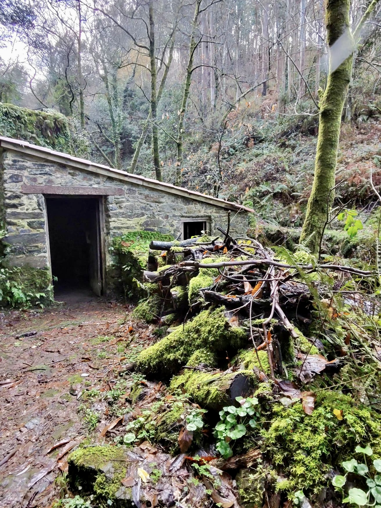

El 21 de febrero de 2026, el entorno natural de Muiños do Batán, en Carral, acogió una actividad de senderismo orientada a la puesta en valor del paisaje, el patrimonio y la biodiversidad del espacio fluvial vinculado al río Barcés.
La ruta, organizada en colaboración con la Universidade da Coruña, consistió en un itinerario circular de 8 kilómetros que se desarrolló entre las 10:00 y las 14:00. El punto de encuentro se situó en el merendero de Muiños do Batán, desde donde el grupo inició un recorrido que se adentró en el valle del río Barcés, entre los núcleos de Carral y Mesón do Vento.
El itinerario discurrió siguiendo el curso del río Abelleira, permitiendo a las personas participantes descubrir un destacado conjunto de molinos tradicionales, un batán y una antigua central hidroeléctrica, además de cascadas y pequeños saltos de agua que enriquecieron notablemente el paisaje. En las zonas más sombrías, el bosque mostró un excelente estado de conservación, con abundante presencia de helechos y musgos, junto a especies como avellanos y laureles, configurando un entorno de gran atractivo natural.
A lo largo de la jornada se alcanzaron varios miradores naturales sobre el valle, desde los que se pudieron contemplar amplias panorámicas del entorno. El recorrido atravesó también pequeñas aldeas tradicionales que conservan valiosos elementos etnográficos, como lavaderos, pazos y hórreos, reforzando el interés cultural de la actividad.
La combinación de tramos fluviales, masas forestales bien conservadas y zonas más abiertas aportó dinamismo al itinerario, alternando áreas de sombra con espacios despejados que permitieron apreciar con mayor amplitud el paisaje del valle.
Con esta propuesta, la organización impulsó el reconocimiento del patrimonio natural y etnográfico vinculado al río Abelleira, ofreciendo una experiencia de ocio activo que integró naturaleza, historia y tradición en un recorrido de notable interés ambiental y cultural.